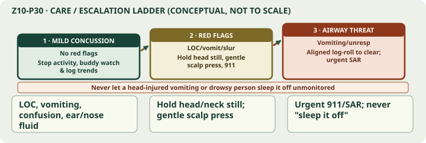

Z10-P30 · Wilderness medicine · New manuscript
Escalate severe head-trauma red flags as urgent neurosurgical emergencies
Detect rising intracranial danger early so evacuation is launched before fatal neurological decline occurs.
When it applies · High-force falls, falling tree limbs, vehicle/watercraft strikes, or any head injury showing red-flag progression.
Equipment · Spinal-stabilization awareness, ground insulation, written trend log, and emergency communications.

Actions
- Activate 911/SAR immediately for ANY severe head-injury red flag: loss of consciousness (even brief), repeated vomiting, worsening severe headache, confusion/agitation, slurred speech, weakness/numbness, seizure, unequal pupils, or clear fluid/blood draining from ears or nose.[M11, T02]
- Keep the person lying still with head and neck gently supported in line, control external scalp bleeding with gentle pressure (never pressing hard into a depressed or soft skull area), and keep them warm and strictly NPO.[M11, M01, M05]
- Monitor airway and breathing continuously; if vomiting occurs, carefully log-roll the entire body as one aligned unit onto the side to clear the mouth while protecting the neck.[M11, M22]
Failure recognition · Letting a head-injured companion "sleep it off" in a tent after vomiting twice and becoming hard to wake.[M11]
Verify · Confirm exact time of impact, responsiveness level, and any red-flag progression are transmitted clearly to EMS/SAR.[M11, M20, T02]
Stop or change course · Any loss of consciousness, declining alertness, vomiting, or uneven pupils requires immediate highest-priority emergency extraction.[M11, T02]
Evidence and editorial notes
- M01 · American College of Surgeons · STOP THE BLEED Training Course (current web edition)
- Section: Ensure Your Own Safety; Find Life-Threatening Bleeding; Compress · Conditions: Lay responder encountering severe external hemorrhage
Support: Ensure scene safety first, call 911, expose the wound to locate life-threatening bleeding, and apply firm continuous direct pressure with clean gauze or cloth.
Limitations: Does not replace formal hands-on Stop the Bleed training or EMS trauma care. · Conflicting evidence: None across ACS/ARC guidelines.
Editorial note: Separates life-threatening arterial/venous hemorrhage from minor scrapes. · Specialist reviewer: Wilderness medicine and trauma EMS
Primary source · checked 2026-11-24 - M05 · NIH / MedlinePlus · Shock (current web edition)
- Section: Recognizing Circulatory Shock and Positioning · Conditions: Injured or ill patient with pale cool clammy skin, rapid weak pulse, confusion, or dizziness
Support: Treat suspected shock as a life-threatening emergency: call 911, control external bleeding, keep the person warm and insulated from cold ground, and do not give food or drink.
Limitations: Field responders cannot diagnose internal hemorrhage or administer IV fluids. · Conflicting evidence: None; reinforces keeping suspected shock patients NPO and warm.
Editorial note: Core shock recognition and stabilization boundary in Z10. · Specialist reviewer: Emergency and wilderness medicine
Primary source · checked 2026-11-24 - M11 · NIH / MedlinePlus · Head Injuries (current web edition)
- Section: Head Injury, Concussion Signs, and Spinal Precautions · Conditions: Falls, struck-by-branch trauma, or head impact with confusion, vomiting, worsening headache, or neck pain
Support: Assume possible head or spinal injury after significant impact; keep the head and neck still, monitor level of responsiveness, call EMS for red flags (loss of consciousness, repeated vomiting, unequal pupils, confusion, neck pain), and never resume hazardous travel.
Limitations: Delayed intracranial bleeding can worsen hours after an initially mild-seeming impact. · Conflicting evidence: None; mandates conservative evacuation for any neurologic red flag.
Editorial note: Grounds head-trauma, concussion, and spinal-motion-restriction cards. · Specialist reviewer: Neurotrauma and wilderness EMS
Primary source · checked 2026-11-24 - M20 · NIH / MedlinePlus · First Aid Overview (current web edition)
- Section: Lay First-Aid Scope, Kit Readiness, and Documentation · Conditions: Pre-trip kit preparation and remote patient monitoring
Support: Maintain an inspected, unexpired first-aid kit matched to your actual training, keep written patient observations (time, responsiveness, breathing, symptoms, interventions) for EMS handoff, and practice skills in certified courses.
Limitations: Carrying advanced medical instruments without clinical training adds risk rather than capability. · Conflicting evidence: None; aligns with ARC and NPS-K.
Editorial note: Anchors kit sizing, SOAP-style lay observation logs, and scope-of-practice cards. · Specialist reviewer: Wilderness EMS and clinical education
Primary source · checked 2026-11-24 - M22 · American Red Cross · First Aid Steps (current web edition)
- Section: First Aid Steps > Patient Monitoring, Recovery Position, and EMS Handoff · Conditions: Breathing unresponsive patient without suspected spinal injury awaiting EMS
Support: Place an unresponsive but normally breathing patient with no suspected spinal trauma onto their side in a stable recovery position to protect the airway while continuously rechecking breathing until EMS takes over.
Limitations: Do not move a patient with suspected spinal trauma unless immediate scene danger or airway obstruction requires it. · Conflicting evidence: None; aligns with ARC/AHA lay positioning.
Editorial note: Anchors airway-protection positioning and handoff documentation. · Specialist reviewer: EMS and emergency medicine
Primary source · checked 2026-11-24 - T02 · American Red Cross · First Aid Steps (current web edition)
- Section: First Aid Steps > Call 9-1-1 · Conditions: Lay emergency response to unresponsiveness, abnormal breathing or severe bleeding
Support: Activate EMS and get needed equipment. Follow dispatcher directions and act within training.
Limitations: Remote locations may delay EMS arrival, requiring sustained stabilization after activation. · Conflicting evidence: None; aligns with NPS-E.
Editorial note: Mandates early emergency activation and dispatcher adherence. · Specialist reviewer: EMS and wilderness medicine
Primary source · checked 2026-11-24
Source lineage · NIH MedlinePlus Head Injuries; new manuscript · Classification · New manuscript.